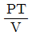
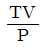
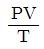
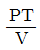
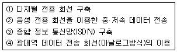

누설비파괴검사기사(구) (2005-05-29 기출문제)
1과목: 누설시험원리
1. 표준 조건에서 기체의 운동을 설명하기 위하여 쓰이는 평균자유행로(mean free path)란?
- 정해진 시간 동안에 여러 분자들의 최대 이동거리의 평균
- 정해진 시간 동안에 여러 분자들의 최소 이동거리의 평균
- 한 분자가 다른 분자와 충돌한 후 다음 충돌하기까지 이동하는 거리의 평균
- 정해진 시간 동안 두 분자들 사이의 최대와 최소를 평균한 거리
(정답률: 알수없음)

2. 고정부피계의 누설률을 결정하기 위한 기초압력변화식은? (단, P는 절대압력, V는 체적, t는 시험시간, Q는 누설률을 표시한다.)
- V = Q.△P/t
- V = t.△P/Q
- V = Q.t/△P
- V = △P.Q.t
(정답률: 알수없음)
3. 헬륨누설검사에서 헬륨질량분석기의 지시신호를 교정하기 전에 먼저 0(영)으로 조정하는 목적을 가장 정확하게 표현한 것은?
- 검사자가 검사속도를 더욱 빠르게 하기 위하여
- 대기중의 헬륨 농도를 보상하기 위하여
- 검사자가 어떤 누설도 놓치지 않기 위하여
- 매우 작은 누설 신호를 더욱 빠르고 쉽게 검출하기 위하여
(정답률: 알수없음)
4. 초음파탐상시험에서 초음파가 경계면에 경사각으로 입사하여 기체의 경계면에 도달하였을 경우 반사되는 초음파의 종류는?
- 종파
- 횡파
- 표면파
- 판파
(정답률: 알수없음)
5. 발포액법에서 발포액의 특성으로 적절하지 않은 것은?
- 표면장력이 작을 것
- 점도가 높을 것
- 젖음성이 좋을 것
- 진공하에서 증발하기 어려울 것
(정답률: 알수없음)
6. 다음 중 누설률 측정단위가 아닌 것은?
- Lb/in3/s
- atm.㎝3/s
- std.㎝3/s
- Pa.m3/s
(정답률: 알수없음)
7. 할로겐 추적가스를 이용한 누설검사를 하고자 한다. 다음중 할로겐족 원소가 아닌 것은?
- 염소(Cl)
- 불소(F)
- 브롬(Br)
- 탄소(C)
(정답률: 알수없음)
8. 다음 중 이상기체의 상태방정식을 올바르게 표현한 것은?(단, P = 절대압력, T = 절대온도, V = 기체의 부피)

= 일정 또는 V1 = V2일 때 P1T1 = P2T2
= 일정 또는 P1 = P2일 때 V1T1 = V2T2
= 일정 또는 V1 = V2일 때 P1T2 = P2T1
= 일정 또는 T1 = T2일 때 P1V2 = P2V1
(정답률: 알수없음)
9. 다음 중 할로겐다이오드 프로브 검출법에서 고려되지 않는 인자는?
- 누설 검출
- 누설위치 결정
- 반정량적인 방법
- 누설의 크기 측정
(정답률: 알수없음)
10. 헬륨누설시험의 스니퍼 프로브로 누설시험을 수행할 경우 시작 전에 헬륨질량분석기의 작동을 교정하기 위해 일반적으로 사용되는 표준누설의 종류는?
- 침투형 표준누설(Permeation standard leak)
- 모세관형 표준누설(Capillary standard leak)
- 여과형 표준누설(Filter standard leak)
- 바늘형 표준누설(Needle standard leak)
(정답률: 알수없음)
11. 할로겐누설시험에서 다음 중 할라이드 토치법의 특성을 잘못 기술한 것은?
- 발(기)포누설시험만큼 빠른 탐상이 가능하다.
- 감도가 발(기)포누설시험과 비슷하다.
- 대부분의 냉매가스는 불연소성이다.
- 큰 누설 근처의 작은 누설도 쉽게 검출한다.
(정답률: 알수없음)
12. 비자성체의 표면 및 표면하 결함을 표면 개구 여부에 관계없이 검출하고자 할 때 다음 중 어느 방법이 가장 적절한가?
- 초음파탐상검사
- 자분탐상검사
- 침투탐상검사
- 와전류탐상검사
(정답률: 알수없음)
13. 누설검사의 압력변화시험은 크게 내압(가압), 진공(감압)으로 대별된다. 일반적으로 환경적 요인이 동일할 때 진공(감압)법은 가압법보다 감도면에서 얼마나 우수한가?
- 10배
- 25배
- 100배
- 동일하다.
(정답률: 알수없음)
14. 음향을 이용한 누설시험의 특징을 기술한 것으로 잘못 기술된 것은?
- 특별한 추적가스가 필요하지 않다.
- 음향 검출기를 이용하므로 기술의 숙련이나 경험이 크게 필요하지 않다.
- 관내의 통상적인 유체의 흐름을 음향누설신호로 오인할 수도 있다.
- 대기 중으로 누설이 존재하여 음파를 발생하면 최대 30m 거리에서도 측정이 가능하다.
(정답률: 알수없음)
15. 헬륨질량분석법에서 시험체의 용적이 350m3, 게이지 압력이 72kPa일 때 필요한 헬륨의 양은?(단, 대기압은 100 kPa)
- 100m3 He
- 252m3 He
- 350m3 He
- 5⑤m3 He
(정답률: 알수없음)
16. 다음 중 누설 위치를 찾는 방법이 서로 다른 한가지는?
- 발(기)포누설시험
- 화학반응지시시험
- 헬륨누설시험
- 액체침투시험
(정답률: 알수없음)
17. 음파, 초음파를 이용한 누설시험에 대한 설명 중 옳지 않은 것은?
- 잡음 신호가 발생될 때 이용이 용이하다.
- 소리를 발생하기 위한 물리적 조건이라면 어떤 유체에도 사용할 수 있는 방법이다.
- 파이프라인 등에서 누설위치를 찾는데 효과적이다.
- 특별한 추적가스가 필요치 않다.
(정답률: 알수없음)
18. 누설검사에서 사용하는 압력단위의 관계가 서로 맞지 않는 것은?
- 100atm = 760torrs
- 1Pa = 1N/cm2
- 1torr = 1mmHg
- 1mbar = 100Pa
(정답률: 알수없음)
19. 절대 압력이 10-3 ∼10-1 torr 범위의 배기된 시스템을 진공유지시험법(Vacuum retention test technique)으로 시험하려고 한다. 압력변화측정으로 그 시스템의 총누설율을 결정하는데 필요한 인자들의 조합은?
- 온도, 시간, 절대 압력, 그리고 내부 체적
- 시간, 게이지 압력, 이슬점 그리고 내부 체적
- 온도, 절대 압력, 시간 그리고 시험체의 표면적
- 게이지 압력, 온도, 이슬점 그리고 시험 체적
(정답률: 알수없음)
20. 압력계에 지시되는 압력, 계기압력, 표준대기압을 0으로 하고 그 이상의 압력을 나타내는 것은?
- 분위기압
- 게이지압력
- 음압
- 공기압
(정답률: 알수없음)
2과목: 누설검사
21. 용접부의 발포누설검사에 대한 설명으로 다음 중 관계가 적은 것은?
- 검사방법은 복잡하나 속도는 빠르다.
- 누설의 위치를 정확히 확인할 수 있다.
- 누설이 미세할 때는 검사시간이 길어진다.
- 매우 큰 누설의 경우 검출감도는 낮아진다.
(정답률: 알수없음)
22. Na-24를 이용하는 누설시험에서 누설여부를 결정하기 위해 필요한 것은？
- 서베이메타
- 진공게이지
- 압력게이지
- 음향센서
(정답률: 알수없음)
23. 기체방사성 동위원소를 이용하여 누설검사할 때 가압 후 최대 몇 분 안에 계측을 마무리해야 하는가?
- 10분
- 20분
- 30분
- 60분
(정답률: 알수없음)
24. 다음 발(기)포누설시험 용액의 물리.화학적 특성 중에서 시험 성능에 영향을 줄 수 있는 것은?
- 핵반응성
- 누설자속
- 이온결합
- 표면장력
(정답률: 알수없음)
25. 할로겐다이오드누설검사에서 일반적인 검사속도는?
- 1 인치/sec 이하
- 1‾2 인치/sec
- 2‾3 인치/sec
- 3‾4 인치/sec
(정답률: 알수없음)
26. 다음 중 폭발의 위험성을 내포하고 있는 누설시험 기체는?
- 이산화탄소
- 프레온
- 암모니아
- 헬륨
(정답률: 알수없음)
27. 할로겐다이오드 누설검사 장비를 교정하기 앞서서의 예열시간은?
- 제작사의 추천 시간
- 15분
- 30분
- 1시간
(정답률: 알수없음)
28. 할로겐 다이오드법으로 누설검사시 추적가스의 농도는 체적에 대하여 최소한 몇 %가 되어야 하는가?
- 10%
- 20%
- 30%
- 40%
(정답률: 알수없음)
29. 할로겐 추적자가스인 R-12에 관한 특성으로 틀린 것은?
- 통상 온도 압력하에서 색채를 띤다.
- 통상 온도 압력하에서 불연성이다.
- 농도가 20%이하이면 냄새가 없다.
- 쉽게 액화된다.
(정답률: 알수없음)
30. 다음 중 분자들의 평균자유행로(mean free path)를 구하는 데 필요한 인자가 아닌 것은?
- 압력
- 온도
- 부피
- 가스의 점성도
(정답률: 알수없음)
31. 아주 큰 누설을 탐지하기 위해 낮은 압력에서 예비 거품누설검사를 실시할 때 다음 중 적당한 거품 용액은?
- 얇은 막의 비누방울 용액
- 분출형 캔
- 두터운 비누거품 용액
- 알콜을 다량 첨가한 용액
(정답률: 알수없음)
32. 질량분석 누설검출기와 진공상태의 시험체를 연결하는 튜브의 길이를 길게 했을 때 일어나는 현상 중 옳은 것은?
- 시스템의 응답시간(response time)이 감소한다.
- 시스템의 응답시간이 증가한다.
- 시스템의 응답시간에 영향을 주지 않는다.
- 시스템의 응답시간이 초기에는 증가하다 점차 감소하게 된다.
(정답률: 알수없음)
33. 반도체와 직접회로 등을 누설검사코자 할 때 적합한 방법은?
- 기포누설시험
- 할로겐시험
- 헬륨질량분석시험
- 방사성동위원소 누설시험
(정답률: 알수없음)
34. 플라스틱 및 고무류 등을 할로겐족 원소가 포함된 냉매로 누설검사할 때 주의할 사항으로 올바른 것은?
- 스니퍼를 사용할 때 불꽃을 발생할 수 있다.
- 쉽게 할로겐을 흡수하여 거짓지시를 나타낼 수 있다.
- 추적가스와 시험체가 높은 활성반응을 일으킨다.
- 검출기 전극의 열화가 가속된다.
(정답률: 알수없음)
35. 다음 중 압력용기의 단위시간당 압력변화를 알 수 있다면 이 용기의 누설율을 결정하기 위하여 필요한 것은?
- 압력용기의 체적
- 누설 개소
- 가장 큰 누설의 크기
- 압력용기의 표면적
(정답률: 알수없음)
36. 대기로 내용물이 누출되는 시스템의 누설검사에 속하지 않는 것은?
- 유동측정
- 압력측정
- 가열음극 할로겐 누설검사
- 방사능 검지가스를 이용한 누설검사
(정답률: 알수없음)
37. 다음 중 누설검사 관련 진공상자법의 구성과 관련이 적은 것은?
- 관찰창(투명창)
- 압력게이지
- 가스킷(gasket)
- 표면온도계
(정답률: 알수없음)
38. 누설검사시 추적가스로 헬륨을 사용하는 이유가 아닌것은?
- 분자량이 적다.
- 취급이 안전하다.
- 불활성 기체이다.
- 형광을 띤 기체이다.
(정답률: 알수없음)
39. 발(기)포 누설시험에서 결함을 해석 및 평가하는데 검출 감도를 높이기 위한 방법이 아닌 것은?
- 깨끗한 액체를 사용하고 빛의 조도를 증가시킨다.
- 기포 형성시간 및 작업자의 관찰시간을 증가시킨다.
- 미세 누설을 검출하기 위해 시험용액의 표면 장력을 증가시킨다.
- Boiling(끓음), 시험용액의 오염 등에 기인된 허위지시를 제거시킨다.
(정답률: 알수없음)
40. 다음 중 가열양극 할로겐누설시험에서 누설여부 표시를 나타낸 것이 아닌 것은?
- 밀리암페어 메타의 전류가 변화하였다.
- 스피커에서 소리가 발생하였다.
- 표시등이 켜졌다.
- 압력게이지가 변화하였다.
(정답률: 알수없음)
3과목: 누설관련규격
41. ASME Sec.VⅢ, Div.1에서 규정된 수압시험은 대체로 최대 사용압력의 1.5배 이상에서 시행토록 되어 있으나 여기에 따르지 않는 품목은?
- 압력용기
- 열교환기
- 복수기
- 펌프
(정답률: 알수없음)
42. ASTM E 1003에 따라 수압시험할 때 보고서에 기록되지 않아도 되는 것은?
- 누설율과 누설위치
- 검사일자 및 검사자서명
- 시험온도와 압력
- 누설지속 시간과 누설량
(정답률: 알수없음)
43. KS B 6225에 따라 강재 석유저장탱크의 몸통은 배관을 접속하기 전에 물채우기 시험을 할 때 물 채운 높이로 알맞는 것은?
- 저장 탱크의 최고사용높이의 2/3 이상
- 저장 탱크의 최고사용높이 이상
- 저장 탱크의 최고사용높이의 4/3 이상
- 저장 탱크의 최고높이까지
(정답률: 알수없음)
44. 헬륨질량분석시험-후드법에서 진공펌프의 배기속도가 50m3/s이고 시험품의 용적이 6300m3일 때 대략적인 응답시간은?
- 1분
- 2분
- 3분
- 4분
(정답률: 알수없음)
45. ASME Sec.V에 의한 진공상자를 사용한 누설검사에서 지시의 평가로 옳은 것은?
- 연속된 지시가 없으면 합격
- 조그만 지시가 나타나면 합격
- 거짓지시가 나타난 경우 불합격
- 의사지시가 나타난 경우 불합격
(정답률: 알수없음)
46. 할로겐다이오드 누설검사를 할 때, 지시계(Meter)에 지시되는 양은?
- 이온화 량
- 압력변화량
- 거품발생량
- 진공도
(정답률: 알수없음)
47. KS B 6210에 규정한 이음매없는 강재 고압가스 용기의 압축가스(산소, 그밖의 가스)에 대한 내압시험압력은?
- 최고 충전압력의
 배
배 - 최고 충전압력의
 배
배 - 최고 충전압력의
 배
배 - 최고 충전압력의
 배
배
(정답률: 알수없음)
48. 수압누설시험 표준방법의 ASTM E 1003에서 누설위치를 찾고자 하는데 이용되는 검사법은?
- 누설 육안검사(Visual Inspection for Leakage)
- 압력 강하지시(Pressure Drop Indication)
- 초음파검사(Ultrasonic Pretesting)
- 자분탐상검사(Magnetic partile test)
(정답률: 알수없음)
49. ASME 규격에 따른 직접가압형 발(기)포누설시험을 할 때 일반적으로 시험부위의 누설을 어느 정도까지 허용하는가?
- 1⒡10-2std.cm3 이하일 때
- 기포의 발생이 분당 3개 이하일 때
- 기포의 발생이 시간당 10개 이하일 때
- 기포가 연속적으로 형성되지 않을 때
(정답률: 알수없음)
50. KS B 6210에 규정한 이음매없는 강재 고압가스 용기의 가압시험 방법은 비수조식 수압시험장치에 의해 규정된 압력을 가한 후 얼마 이상 그 압력을 유지하여야 하는가?
- 5분이상
- 1분이상
- 30초이상
- 10초이상
(정답률: 알수없음)
51. ASTM E 1002에는 초음파를 이용한 누설검사법에 대해 규정하고 있다. air probe를 교정할 때 교정누설 시험체로부터 검출 probe의 위치는?
- 1m
- 5m
- 10m
- 30m
(정답률: 알수없음)
52. KS B 6225 강재 석유저장탱크의 구조에 의거 발포 용액을 이용한 진공 누설시험하는 부위는?
- 애뉼러플레이트 옆판과의 T용접이음부
- 밑판 이음 용접부의 3매 겹침부
- 옆판 맞대기 용접부
- 밑판, 애뉼러플레이트
(정답률: 알수없음)
53. KS B 6211에 따라 용접 강재 액화석유가스용기의 내압성을 검사할 때 검사 롯트 및 시료수로써 맞는 것은?(단, 동일 제작소, 동일년월일, 동일 재료로 제작됨)
- 용기 50개 이하를 1롯트로 해서 임의로 1개를 취하여 팽창측정시험을 하고 그 롯트의 나머지에 대해 가압시험한다.
- 용기 10개 이하를 1롯트로 해서 임의로 1개를 취하여 팽창측정시험을 하고 그 롯트의 30%에 대해 가압시험한다.
- 용기 100개 이하를 1롯트로 해서 임의로 1개를 취하여 팽창측정시험을 하고 그 롯트 이외 용기 전체를 가압시험한다.
- 당일 제조 롯트 중 1개를 취하여 팽창시험을 하고 그롯트의 나머지에 대해 전수 가압시험을 한다.
(정답률: 알수없음)
54. ASME Sec.V art.10 압력변화시험법으로 기기에 압력을 가할 때 올바른 방법은?
- 설계압력의 1.25배를 초과하지 않아야 한다.
- 설계압력의 1.5배를 초과하지 않아야 한다.
- 설계압력의 2배를 초과하지 않아야 한다.
- 설계압력을 초과하지 않아야 한다.
(정답률: 알수없음)
55. 보일러의 최고 사용압력이 0.43MPa일 때 KS B 6233에서 규정하는 수압시험 압력(MPa)은?
- 최고 사용압력의 1.5배
- 최고 사용압력의 2배
- 최고 사용압력의 0.75배
- 최고 사용압력의 1배
(정답률: 알수없음)
56. 컴퓨터 모니터의 해상도를 나타내는 단위는?
- 센티
- 인치
- 미터
- 픽셀
(정답률: 알수없음)
57. 인터넷 호스트의 폭발적인 증가로 발생되는 IP 어드레스의 수용한계를 극복하고자 128bit의 어드레스 구조를 가진 차세대 TCP/IP 표준은?
- IPv4
- IPv5
- IPv6
- IPv2
(정답률: 알수없음)
58. 아래의 정보통신 발달과정을 순서에 맞게 나열한 것은?

- ① → ② → ③ → ④
- ② → ④ → ① → ③
- ② → ① → ③ → ④
- ① → ④ → ② → ③
(정답률: 알수없음)
59. 한 사람 한 사람 개별적으로 상대하기 보다는 가장 많은 사람들이 궁금해하는 내용들을 한곳에 모아 두고 아무나 찾아볼 수 있게 해 두는 것을 무엇이라 하는가?
- Community
- Guest Book
- BBS
- FAQ
(정답률: 알수없음)
60. 입.출력 기능을 감독하고 컴퓨터 자원을 스케쥴링하기 위해서 고안된 프로그램의 모임은?
- 디바이스 드라이버
- 워드프로세서
- 운영체제
- 보조기억장치
(정답률: 알수없음)
4과목: 금속재료학
61. 실용 동합금의 2원계 상태도에서 청동형에 대한 설명 중 맞는 것은?
- 공정변태한 것으로 시효성합금의 특수황동이라고도 한다.
- 포정 반응으로 생긴 β가 상온까지 존재하므로 실용합금은 α상 혹은 α+β상의 조직이다.
- 공석 변태가 존재하며 이 공석 변태는 담금질로 방지할 수 있다.
- 청동형에는 Cu - Pb, Cu - Zn, Cu - Ag 등이 있다.
(정답률: 알수없음)
62. 탄소강의 질화처리에서 질화층이 잘 형성되도록 하는 첨가 원소는?
- Mg
- Mo
- Ni
- Aℓ
(정답률: 알수없음)
63. 금속간 화합물에 대한 설명으로 틀린 것은?
- A, B 두 금속이 간단한 원자비로 결합되어 본래의 물질과 같은 성질을 형성한다.
- 고온에서 불안정하여 화학적으로 분해되기 쉽다.
- 일반 화합물에 비하여 결합력이 약하며, 전기저항이 큰 비금속 성질이 강하다.
- 일반식은 AmBn으로 표시한다.
(정답률: 알수없음)
64. 주철의 성질을 나타내는데 가장 적합한 것은?
- 인장강도가 크다.
- 압축강도가 크다.
- 단조가 용이하다.
- 열처리가 용이하다.
(정답률: 알수없음)
65. 알루미늄의 부식방지법으로 사용되지 않는 것은?
- 수산법
- 황산법
- 크롬산법
- 피클링법
(정답률: 알수없음)
66. 귀금속에 속하지 않는 것은?
- 철
- 금
- 은
- 백금
(정답률: 알수없음)
67. α-황동에 있어서의 이상경화현상(anomalous hardening) 이란?
- 고온 풀림한 후 가공에 의하여 생기는 경화현상
- α-황동의 상변태에 의하여 생기는 경화현상
- 가공한 후 저온 풀림에 의하여 생기는 경화현상
- 불순물에 의하여 생기는 경화현상
(정답률: 알수없음)
68. 표면층의 화학조성을 변화 시켜 줌으로서 표면강화하는 것은?
- 불꽃 경화(flame hardening)
- 고주파 경화(induction hardening)
- 고체 침탄(pack carbourizing)
- 숏트 피이닝(shot peening)
(정답률: 알수없음)
69. 티탄과 그 합금의 성질을 설명한 것 중 틀린 것은?
- 티탄은 내산화성이 우수하여 공기중에서 용해 및 열간가공이 가능하다.
- 비중에 비하여 강도가 커서 항공기 재료로 쓰인다.
- 고온강도가 우수하여 터빈등에 응용된다.
- 내식성이 우수하여 생체재료로 쓰인다.
(정답률: 알수없음)
70. 표점거리 50mm, 직경 5mm인 봉재 시편을 인장시험 결과 최대하중 3000kgf에서 절단되었고 절단 후 표점거리 55mm였다면 이 때의 인장강도는? (단, 단위 : kgf/mm2, 소수점 두째자리에서 반올림 하시오.)
- 140.8
- 152.8
- 210.1
- 222.3
(정답률: 알수없음)
71. 다음 강에 대한 표면경화 열처리를 위한 침탄제 중 가장 우수한 것은?
- 목탄60∼70%, BaCO3 20∼ 30%, NaCO3 10%
- 목탄50%, BaCO3 10%, NaCO3 20∼ 30%
- 목탄60∼70%, NaCO3 10%
- 목탄10∼20%, BaCO3 10∼ 20%,
(정답률: 알수없음)
72. 순철은 상온에서 용융점 까지의 온도영역에서 동소변태점이 몇개가 있는가?
- 1 개
- 2 개
- 3 개
- 4 개
(정답률: 알수없음)
73. 마그네슘 합금 주물로써 크리프 강도(creep strength)가 높아 내열성으로 이용하는 합금은?
- Mg - Fe 계 합금
- Mg - Aℓ계 합금
- Mg - Zn 계 합금
- Mg - Th 계 합금
(정답률: 알수없음)
74. 다음 재료들의 기호 중에서 합금 공구강으로 바이트, 다이스 등에 사용되는 합금 공구강의 KS 기호는?
- STS
- STB
- SCM
- STR
(정답률: 알수없음)
75. 고온중 동에서 생기는 수소취성(水素脆性)의 원인으로서 맞는 것은?
- 수증기의 증기압으로 인하여 동 입계가 확대 또는 균열이 일어난다.
- 동원자와 수소원자가 금속간 화합물을 만들기 때문이다.
- 고온에서 수소원자가 확산되기 때문이다.
- 동금속에 함유된 철과 수소와 반응하기 때문이다.
(정답률: 알수없음)
76. 금속침투법(metallic cementation)의 설명으로 틀린 것은?
- 제품을 가열하여 그 표면에 다른 종류의 금속을 피복시키는 동시에 확산에 의해 합금피복층을 얻는다.
- 주로 철강제품에 대해 Sn, Zn, Aℓ, Cr 등의 금속을 침투확산시킨다.
- 경도 및 내마모성을 감소시키는 효과가 있다.
- 방청성, 내식성, 내고온산화성등의 화학적 성질을 향상시킨다.
(정답률: 알수없음)
77. Au - Ag - Cu 합금에서 Zn을 첨가하는 주목적으로 틀린 것은?
- 탈산
- 공냉시 일어나는 경화의 완화
- 융점 저하
- 결정입의 취성화
(정답률: 알수없음)
78. 강의 절삭성을 향상시킨 쾌삭강은 어느 원소를 첨가한 것인가?
- Ni, Cr
- Cr, Mn
- Mo, P
- Pb, S
(정답률: 알수없음)
79. 구상 흑연주철을 제조할 때 흑연의 구상화 작용에 가장 큰 방해가 되는 원소는?
- Si
- Ca
- S
- Mg
(정답률: 알수없음)
80. 영구 자석으로서 필요한 성질은?
- 자계에서 쉽게 자화되고 자계외에서 쉽게 자기를 잃어야 한다
- 잔류자속 밀도와 보자력이 커야 한다
- 잔류자속 밀도는 작고, 보자력이 커야 한다
- 자기의 시간적 변화가 크고, 온도상승 충격진동 등에 의해 자기가 감소되어야 한다
(정답률: 알수없음)
5과목: 용접일반
81. 내균열성이 가장 우수한 피복 아크 용접봉은?
- 저수소계
- 일미나이트계
- 티타니아계
- 철분 산화철계
(정답률: 알수없음)
82. 알미늄 용접의 특징 설명으로 올바른 것은?
- 기공발생의 주원인은 공기 중의 산소이다.
- 균열발생의 주원인은 열팽창율이 작기 때문이다.
- 용접방법중 피복 아크 용접이 가장 많이 적용된다.
- 응고 수축율이 높으므로 용접변형이 쉽게 일어난다.
(정답률: 알수없음)
83. 아크 용접기의 2차 정격전류가 400A인 용접기로 용접작업시에 실제 225A 사용했다면 이 용접기의 허용사용율은? (단, 정격사용율이 40% 이다)
- 약 96%
- 약 1⑤%
- 약 126%
- 약 156%
(정답률: 알수없음)
84. 용접부 검사법 중 비파괴 시험에 속하지 않는 것은?
- 자분탐상시험
- X - 선 투과시험
- 형광침투시험
- 현미경 조직시험
(정답률: 알수없음)
85. 아크용접에 비교한 가스용접의 특징에 대한 설명으로 틀린 것은?
- 아크용접에 비하여 불꽃의 온도가 낮다.
- 아크용접에 비하여 유해광선의 발생이 많다.
- 폭팔의 위험성이 크고, 금속의 탄화 및 산화될 가능성이 많다.
- 용접변형이 크고 금속의 종류에 따라 기계적 강도가 떨어진다.
(정답률: 알수없음)
86. 가스절단이 주철, 스테인레스강 또는 비철금속은 불가능 또는 곤란하게 하는 중요한 이유로 가장 적합한 설명은?
- 절단 토치의 조절을 잘못하므로 절단이 잘 안된다.
- 절단할 수 있는 연소재료의 순도 불량 때문이다.
- 생성된 산화철의 융점이 모재보다 낮기 때문이다.
- 모재 금속의 융점이 슬랙이나 산화물보다 산소와 모재의 반응을 방해하기 때문이다.
(정답률: 알수없음)
87. 내용적이 40ℓ인 산소용기의 고압력계 압력이 90 기압이었다면, 프랑스식 팁 300번으로는 몇 시간이나 용접할 수 있겠는가? (단, 산소와 아세틸렌의 혼합비는 1 : 1 이다)
- 6시간
- 9시간
- 12시간
- 18시간
(정답률: 알수없음)
88. AW 500, 정격 사용율이 60%인 아크용접기로 400A의 전류로 용접한다면 허용 사용율은 약 몇 % 인가?
- 72
- 94
- 108
- 125
(정답률: 알수없음)
89. 논가스 아크 용접의 장점 설명 중 틀린 것은?
- 보호가스나 용제가 필요없다.
- 교류, 직류 모두 사용할 수 있다.
- 바람이 있는 옥외 작업이 가능하다.
- CO2 아크 용접보다 용접성이 아주 좋다.
(정답률: 알수없음)
90. 서브머지드 아크용접에서 2개 이상의 전극을 사용하는 다전극 방식이 아닌 것은?
- 텐덤식(tandem process)
- 대차식(carriage process)
- 횡직렬식(series transverse process)
- 횡병렬식(parallel transverse process)
(정답률: 알수없음)
91. 플라즈마 아크절단에 관한 설명 중 잘못된 것은?
- 텅스턴 전극봉과 모재 사이에서 아크가 발생하는 형식을 이행형이라 한다.
- 스테인리스강 절단시 작동가스로는 알곤과 헬륨의 혼합가스가 많이 쓰인다.
- 비 이행형은 콘크리트, 내화물 등의 비금속 절단도 가능하다
- 플라즈마 절단은 10,000℃ 이상의 높은 열에너지를 이용한다.
(정답률: 알수없음)
92. 아크길이가 길 때 일어나는 현상이 아닌 것은?
- 열 집중이 크다.
- 스패터링이 많아진다.
- 용입불량이 된다.
- 산화 및 질화되기 쉽다.
(정답률: 알수없음)
93. 테르밋 용접의 특징으로 틀린 것은?
- 전기가 필요하다.
- 용접 장소의 이동이 쉽다.
- 용접용 기구와 용접 작업이 단순하다.
- 용접 시간이 짧고 용접 후 변형이 적다.
(정답률: 알수없음)
94. 용접봉의 종류 기호 중 고산화티탄계를 나타내는 것은?
- 4301
- 4311
- 4313
- 4316
(정답률: 알수없음)
95. 고탄소강 용접에서 급랭 경화를 피하기 위한 방법으로 다음 중 가장 효과가 있는 것은?
- 예열을 한다.
- 피닝을 한다
- 뜨임을 한다.
- 풀림처리를 한다.
(정답률: 알수없음)
96. 일반적인 아크용접에서 극성에 따른 모재측의 발열량이 많은 순서대로 표시한 항은?
- DCSP ＞ AC > DCRP
- DCRP > AC > DCSP
- DCRP > DCSP > AC
- DCSP > DCRP > AC
(정답률: 알수없음)
97. KS 용접도시기호의 보조기호 중 온둘레 용접을 나타내는 기호는?
(정답률: 알수없음)
98. 직류용접에서 정극성과 비교한 역극성의 특징 설명으로 올바른 것은?
- 비드 폭이 좁다.
- 모재의 용입이 깊다.
- 용접봉의 녹음이 느리다.
- 박판, 비철금속의 용접에 사용된다.
(정답률: 알수없음)
99. 아크 용접시 피복제의 역할 설명으로 틀린 것은?
- 용착금속의 기계적 성질을 좋게 한다.
- 열영향부에서의 탈산작용을 한다.
- 용착금속의 급냉을 방지한다.
- 아크의 안정을 좋게한다.
(정답률: 알수없음)
100. 용접부의 잔류응력이 이음 성능에 미치는 영향 설명으로 틀린 것은?
- 교번하중을 받을 때 약해지는 경우가 발생할 수 있다
- 저온에서 사용되는 구조물에서는 취성파괴를 발생하는 원인이 될 수 있다.
- 특수 분위기 중에서 부식하기 쉬운 원인이 될수있다.
- 구속응력이 크게 되는 상태에서는 용접 중에는 균열 발생이 되지 아니한다.
(정답률: 알수없음)